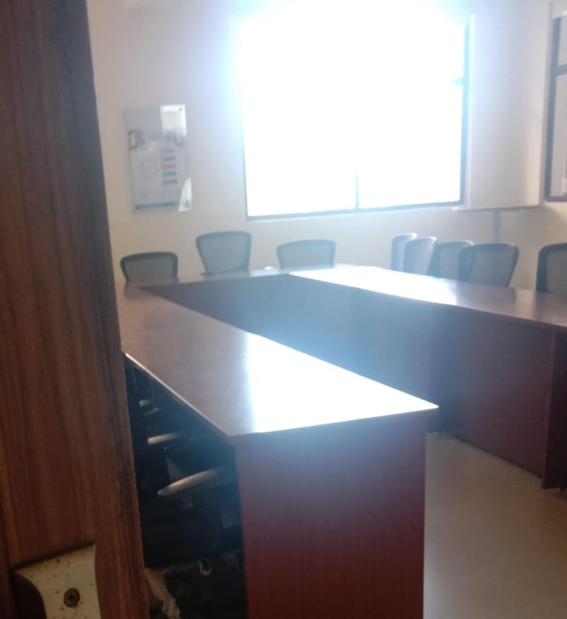
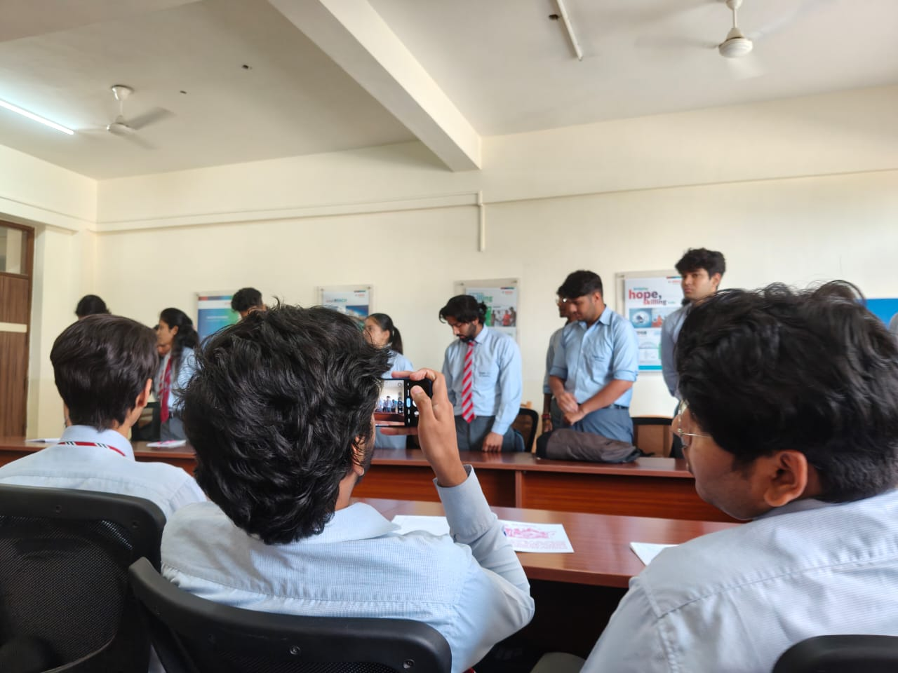
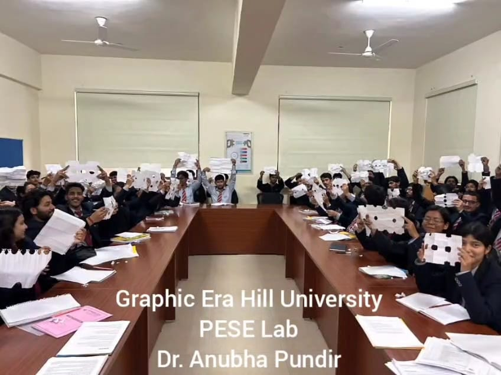
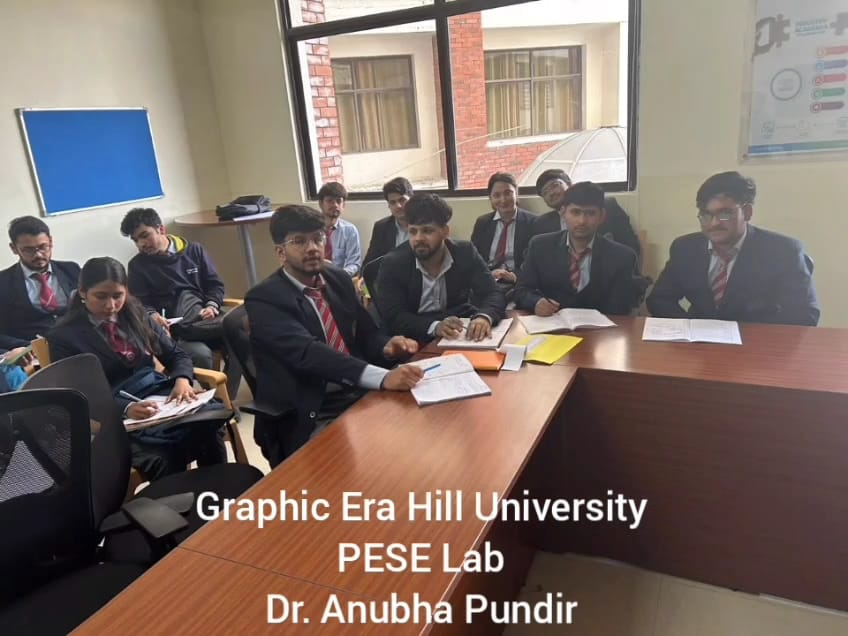

Hello! I am Ankita Negi, a dedicated and enthusiastic Computer Science Engineering student at Graphic Era Hill University. I’m deeply interested in Artificial Intelligence, Compiler Design, and System Architecture. I love building innovative solutions to real-world problems and enjoy exploring emerging technologies like machine learning, cloud computing, and cybersecurity.
I have developed multiple technical projects that demonstrate my ability to think analytically, write clean code, and solve complex problems. I am passionate about learning and constantly seek opportunities to improve my skills—whether through online courses, project work, or research.
Outside academics, I enjoy participating in coding contests, contributing to open-source projects, and collaborating on interdisciplinary tech initiatives. I am also an effective communicator and team player. In my leisure time, I love cooking, listening to music, and exploring how technology can empower people.
Aspiring Software Engineer with a strong interest in AI, system design, and compiler theory. Looking for an engineering position where I can apply my technical expertise and problem-solving skills to contribute to innovative solutions and impactful projects.
| Year | Degree/Exam | Institute |
|---|---|---|
| 2022 - Present | B.Tech in Computer Science | Graphic Era Hill University, Dehradun |
| 2022 | Class XII (C.B.S.E) | Baluni Public School |
| 2020 | Class X (C.B.S.E) | Baluni Public School |
I’m Ankita Negi from the E1 section, Roll No. 13, and this is my feedback on the PESE Lab conducted this semester under the guidance of Dr. Anuva Ma’am.
The sessions throughout the semester were not only informative but also very engaging. Ma’am's teaching style was unique—structured yet creative—and each class brought something new to the table. Her supportive and approachable nature made learning both effective and enjoyable.
The PESE lab wasn’t just about learning professional skills—it was about self-growth too. From group discussions to mock interviews, every activity was practical and helped us become more confident in real-life scenarios. One of my favorite parts was the last 10 minutes of each class, where we participated in small activities or interactive tasks. They added energy, boosted our confidence, and helped us connect with one another.
Personally, I’ve seen a big improvement in my confidence and communication. The assignments and assessments were thoughtfully designed, and Ma’am’s consistency and punctuality stood out. She explained even complex topics in a way that was simple and easy to understand.
Thank you, Ma’am, for your dedication and for making this semester truly enriching. Your efforts and encouragement have made a lasting impact on all of us.
The PESE (Professional & Employability Skills Enhancement) Lab was not just another academic course—it was a powerful bridge between classroom learning and real-world professional expectations. Throughout this lab, we gained hands-on experience in refining our soft skills, shaping our personal brand, and preparing for the competitive professional world.
Overall, the PESE Lab gave us a practical understanding of how to present ourselves professionally and confidently in interviews, workplaces, and public interactions. It was a stepping stone to becoming not just better students, but better professionals.
I have shared my reflections and detailed insights about the PESE (Professional & Employability Skills Enhancement) course in the following feedback document.
PESE Lab: E1 Section
Activity:
Activity:
Group discussions
I believe that personal growth is not limited to academics and projects. Engaging in extracurricular activities has helped me maintain a balanced lifestyle, develop discipline, and enhance both physical and mental well-being. Here are some of the activities I actively pursue:
These activities shape not only my well-being but also develop qualities such as persistence, teamwork, and time management that translate into my academic and professional life.
"Code with purpose, debug with patience, and learn with passion."
"Stay curious, stay kind, and never stop improving."
"Discipline turns dreams into reality."
“Driven by curiosity,powered by code.”
grep – because nothing hides from it!As part of our PESE lab activities, I conducted a recorded interview with my classmate Akanasha Digari. The goal was to practice effective communication, active listening, and interview skills in a professional yet friendly setting.
You can watch the interview here: ▶️ Watch Interview Video